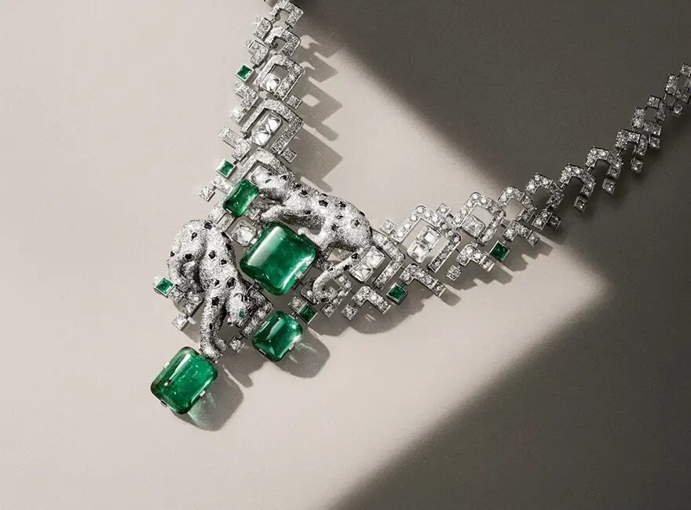

A new collection in a port town in late spring. One hundred and thirty pieces, the four classical stones, a long lunch in the sun. Cartier read the room.
Cartier unveiled Le Choeur des Pierres in Saint-Tropez in late May, the first chapter of a high jewellery project the maison has been building for the better part of two years. The piece count is one hundred and thirty. The headline material is colour. The headline event was not a Paris salon. It was a lunch on the Cote d'Azur, with the jewellery worn by the table.
The collection's spine is the four classical precious stones, diamond, emerald, ruby and sapphire. Cartier has built the chapter around their behaviour together, the way they harden or soften a setting, the way they speak across a clasp. The title translates as the chorus of stones, and the brief is musical, the stones reading as voices rather than soloists.
The pieces
Coloured diamonds carry the chromatic range, more than eight hues across the chapter. The maison has stretched the secondary palette in two directions. Garnet sits in for the warm end, picking up the ruby line. Lapis lazuli and onyx work the cool. Around a dozen centre stones break twenty carats. The setting work runs heavy on platinum, with yellow gold where the colour wants to lift.
The opening lineup includes the Solenara, a platinum necklace with emeralds and diamonds that wraps the throat in a long V. Tilda Swinton wore it through the lunch. Shu Qi wore a platinum and yellow gold necklace set with white diamonds. Both pieces were on bodies, in daylight, in motion, which is not how a Cartier collection usually meets the press.

Cartier high jewellery · Courtesy of Cartier
The setting
Saint-Tropez is a calculated address. The town has a Cartier history, the boutique at Place de la Garonne is one of the older Riviera houses on the maison's map. The light is the other reason. Stones drop their depth in a salon. In Saint-Tropez in May, they finish their colour.
The Riviera launch sets a contrast with the Paris route. The full chapter will travel; Cartier is showing pieces from Le Choeur des Pierres at Paris Couture Week in July, with the second chapter announced for later in the year. Saint-Tropez was the opening movement, not the only one.
The collection's title translates as a chorus of stones. The maison built the launch to match, in daylight, on bodies, in motion.
The Splendid EditThe Choeur des Pierres opens a wider Cartier year. Earlier this season the maison brought back the Roadster at Watches and Wonders, with seven new references across two sizes. The Crash returned in a numbered skeleton edition of one hundred and fifty pieces. The Tortue, first drawn in 1912, came back with its own collection. The watch side is closing a loop on its own archive. High jewellery is starting a new one.
The Richemont read
Cartier is the senior maison inside Richemont, the Swiss-listed group that also owns Van Cleef and Arpels, Buccellati, Piaget, Jaeger-LeCoultre, Vacheron Constantin, Panerai, IWC, A. Lange and Sohne, Cloche, and Chloe. Richemont's fiscal year closed on 31 March 2026 with stronger jewellery growth than watch growth, the second consecutive year of the same shape. Le Choeur des Pierres falls inside the part of the business that has been carrying the group.
The bigger move is the launch format. High jewellery has trended toward set-piece dinners, scripted reveals and gallery moments. A lunch in Saint-Tropez, with the stones doing the entrance, returns the genre to the act of wearing. Cartier has done daylight before. Doing it now, with this many carats, reads as a quiet line about where the category is going.
Le Choeur des Pierres is on private view through the Cartier high jewellery office in Paris. Selected pieces travel to Paris Couture Week in July 2026.
Photography courtesy of Cartier · Richemont press